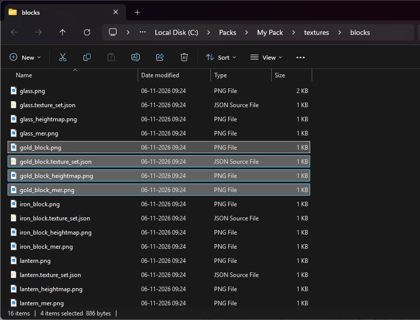
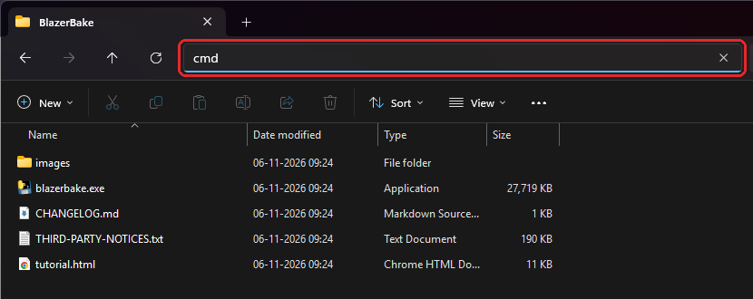
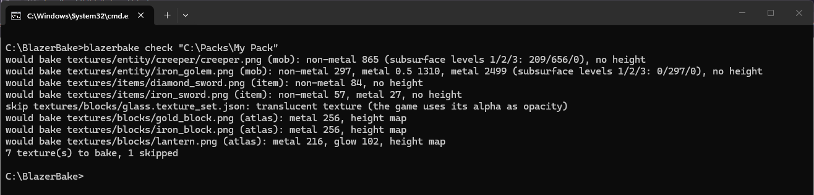
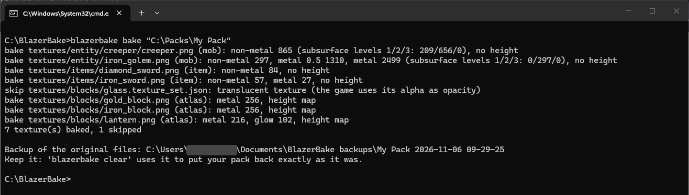
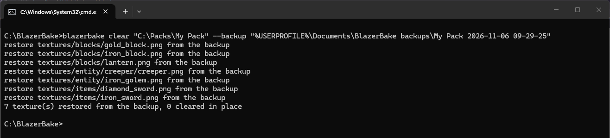
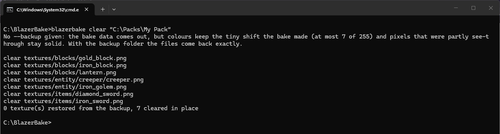

Tutorial for creators
BlazerBake
BlazerBake puts the PBR from your texture sets onto mobs, items and held blocks in BlazerRT. This page takes you from an unbaked pack to a baked one, and back again.
Read this first: the limits
- Windows only. BlazerBake is a Windows program, same as Minecraft RTX. There's no Mac or Linux version.
- BlazerRT only. Vanilla RTX and other shaders don't read what BlazerBake adds. Your pack still looks fine there, but mobs and items get no PBR from the bake.
- What it covers: mobs, items, and blocks you hold, put in item frames or drop on the ground. Placed blocks already use your texture sets, so they don't need it and don't change.
- No normal maps on mobs, items or held blocks. If your texture set has a normal map, it gets turned into a height map. Relief comes out softer than the original, more so on high-resolution textures (128x and up).
- Less precision than a texture set. Roughness has 12 steps (16 to 32 on metal), metalness can only be 0, 25, 50 or 100%, glow has 8 levels, subsurface has 4, and height has 64 levels per texture. A glowing pixel can't also be metal or shiny.
- Some textures are skipped on purpose, because the game uses their transparency for something: glass, ice, water, slime, honey and portals; dye masks (sheep wool, collars, leather armour, banners, shield patterns); item layers the game tints (potion overlays, fireworks, filled maps, leather); the grass block side; and mob textures with lots of half see-through pixels. That last group includes mobs whose glow is painted into the alpha channel.
- Mob textures need a see-through top-left pixel. If yours isn't, and the model doesn't use that
pixel, you can bake it anyway with
--force. - Only textures with a texture set are baked. No
.texture_set.jsonwith a MER layer, no bake. - The bake edits your texture files. Colours move by a few levels (you won't see it), and the transparency of visible pixels changes slightly. Inventory icons stay solid. Keep an unbaked copy of your pack.
- Clearing is only exact with the backup. Without it, the bake data comes out, but colours keep their tiny shift and half see-through pixels stay solid.
- Edits after baking: BlazerBake skips textures it already baked. Clear first, edit, then bake again.
- It's an alpha. Things can change between versions. Bake again after updating BlazerBake.
1What your pack needs
Every texture you want baked needs a .texture_set.json and a MER map next to it, the same
files you'd make for RTX. A height map or a normal map is optional and gives the texture relief.
Here's one block from a pack. The four selected files belong together: the colour texture
(gold_block.png), its texture set, its height map and its MER map. Mobs go in
textures\entity and items in textures\items, with the same kind of files.

2Work on a copy
Copy your pack folder somewhere safe and bake the copy. Keep your original to edit later.
3Open a Command Prompt in the BlazerBake folder
Unzip BlazerBake somewhere easy to find, like C:\BlazerBake. Open that folder, click the
address bar, type cmd and press Enter.

cmd in the address bar of the BlazerBake folder.A Command Prompt opens, already in the BlazerBake folder. On Windows 11 it may open inside Windows Terminal. That's fine, it works the same.
Tip
You don't have to type long folder paths. Type the command, then drag the pack folder from File Explorer into the Command Prompt window and it pastes the path for you.
4Check the pack first
This shows what would be baked and what would be skipped. It doesn't change anything.
blazerbake check "C:\Packs\My Pack"

would bake lines are what the bake will change. skip lines tell you why a
texture is left alone. Here the glass is skipped because the game draws it see-through. The
common messages table explains the rest.
5Bake
blazerbake bake "C:\Packs\My Pack"

When it's done, the last lines tell you where the backup went. By default that's
Documents\BlazerBake backups, one folder per bake. Don't delete it until you're sure you won't
need to undo the bake.
6Try it in the game
Load the baked pack in Minecraft with BlazerRT installed and ray tracing on. Look at your mobs up close, hold your items, drop a few blocks and put some in item frames. Relief is easiest to see with a low sun and the camera close to the surface.
If you change a texture later, clear the bake, edit your files, and bake again.
7Clear a bake
With the backup (exact)
Point --backup at the folder the bake made. Your files come back exactly as they were.
The folder name ends in the date and time of your bake, so copy it from the bake's last lines.
%USERPROFILE% saves you typing your user folder.
blazerbake clear "C:\Packs\My Pack" --backup "%USERPROFILE%\Documents\BlazerBake backups\My Pack 2026-11-06 09-29-25"

Without the backup
Lost the backup? Clear still takes the bake data out, so the pack works with other shaders again. Colours stay a few levels off and half see-through pixels stay solid, which you normally won't notice.
blazerbake clear "C:\Packs\My Pack"

Add --check to see what clear would do before it does it.
Options
These go after the pack path, for check and bake.
| Option | What it does |
|---|---|
--force | Bake mob textures whose top-left pixel isn't see-through. Only use it when the model doesn't use that pixel. |
--only mob / item / block | Bake just one kind of texture. |
--generate-height 0.35 | Textures with no height or normal map get a height guessed from their brightness. It's a guess, so check the result. |
--mob-height-highpass 0.03 | For high-resolution mob textures (512 px and up) with normal maps. Keeps the fine relief that would otherwise come out flat. |
--item-scale 2 | Upscales 16 × 16 item icons to 32 × 32 before baking, for finer relief on items. Colours and materials stay blocky; only the relief gets smoother. |
--sss "textures/entity/(pig|cow)/" | Gives the matching textures full subsurface scattering (skin, flesh). You can use it more than once. |
--include-translucent | Also bakes mob and item textures with half see-through pixels. Those pixels turn more solid. |
--full-metal-items | Makes partly metal item pixels fully metal. |
--backup "folder" | Bake only: puts the backup in that folder instead of Documents. |
--no-backup | Bake only: no backup. Then clear can't be exact. |
Common messages
| Message | What to do |
|---|---|
| translucent texture (the game uses its alpha as opacity) | Nothing. It's left alone on purpose. |
| the top-left texel ... is not transparent | Make that pixel see-through, or bake with
--force if the model doesn't use it. |
| ... is already baked | Clear the pack first if you want to bake it again. |
| colour image ... not found next to it | The texture set points at a file that isn't there.
Check the name in the .texture_set.json. |
| its alpha is the biome tint mask | Nothing. The grass side is left alone on purpose. |
| is tinted by the game | Nothing. Tinted item layers can't be baked. |
| has no blazerrt_bake.json: nothing to clear | That pack wasn't baked, or was already cleared. |
If something goes wrong
"blazerbake is not recognized"
The Command Prompt isn't open in the BlazerBake folder. Go back to step 3.
"Windows protected your PC"
The exe isn't signed. Click More info, then Run anyway.
Paths with spaces
Put quotes around them, like "C:\Packs\My Pack".